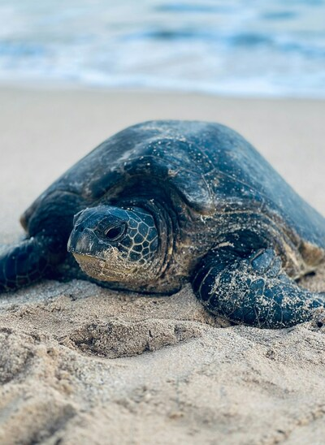
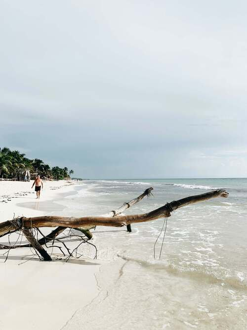

DESCUBRE LAS MARAVILLAS DEL NORTE DEL PERÚ
Bienvenido a tu guía turística definitiva de las playas más impresionantes del norte del Perú. Sumérgete en un paraíso de arena dorada, aguas cristalinas y atardeceres inolvidables.
Actividades
Las playas del norte de Perú no solo son un deleite para la vista, sino que también ofrecen una amplia gama de actividades para todos los gustos. Ya seas un aventurero en busca de emociones o alguien que prefiere relajarse bajo el sol, aquí encontrarás algo que se adapte a tus deseos. ¡Descubre las mejores actividades que puedes disfrutar en estas hermosas costas!
Surf
Un paraíso para los surfistas, con olas que se adaptan a todos los niveles. Máncora es conocida por sus olas consistentes y emocionantes, mientras que Punta Sal y Lobitos también ofrecen excelentes condiciones para este deporte. Si eres principiante, no te preocupes: hay muchas escuelas de surf que ofrecen clases para aprender.
Buceo y Snorkel
Explora el fascinante mundo submarino del norte peruano. Las aguas cristalinas de playas como Máncora y Punta Sal son perfectas para el buceo y el snorkel, donde podrás observar coloridos peces, corales y, en algunas temporadas, incluso lobos marinos y tortugas.
Relajación y bienestar
Si prefieres un enfoque más relajado, muchas playas cuentan con servicios de spa y bienestar. Disfruta de un masaje al aire libre mientras escuchas el sonido de las olas o participa en una clase de yoga en la playa.
Gastronomía local
No puedes dejar de disfrutar de la deliciosa gastronomía costera. Prueba el ceviche fresco, los tiraditos y otros platos de mariscos en los restaurantes locales, donde la frescura del producto es una garantía.
Destinos
Galeria
Las playas de Perú son un refugio de serenidad y belleza natural, donde se entrelazan paisajes y culturas. A través de nuestra galería, te invitamos a apreciar la diversidad de entornos y tradiciones que hacen de cada playa un lugar especial. Disfruta de este viaje visual en calma y contemplación.
 Guía de viajes
Costa norte
La costa norte se distingue por su clima cálido, con una temperatura promedio de alrededor de 23-25°C (73.4-77°F). En las regiones de Piura y Tumbes, las precipitaciones varían entre 50 (1.96 in) y 200mm (7.87 in) únicamente durante los veranos. Este clima se clasifica como tropical-seco, también conocido como tipo sabana tropical. Compuesta por los departamentos de: Tumbes, Piura, Lambayeque, La Libertad.
Costa Central
La costa central se ubica entre el extremo posterior y el extremo inferior de la costa peruana, albergando la capital, Lima. Esta región se caracteriza por su clima desértico, con escasez de lluvias a lo largo del año. El clima en la costa central es templado-cálido, sin extremos de frío ni calor. Los veranos son mayormente despejados y calientes, con temperaturas máximas que oscilan entre 26°C y 28°C (78.8°F y 82.4°F).

Costa Sur
A los pies de la estrecha franja longitudinal del Perú, encontramos la costa sur, la menos húmeda y de veranos cálidos con temperaturas que llegan hasta los 28 °C (82.4°F) por la media tarde y los 20°C (68°F) por las madrugadas. A diferencia de las demás regiones de la costa sur, la región del desierto de Nazca alcanza temperaturas superiores hasta los 32°C (89.6°F). Compuesta por los departamentos de: Arequipa, Moquegua y Tacna.
Recomendaciones de Playas en Perú
| Playa | Puntaje (de ★10) | Comentarios |
|---|---|---|
| Huanchaco | ★9.0 | Excelente para jovenes excentricos. |
| Mancora | ★8.5 | Gran vegetacion y ambiente nocturno. |
| Punta Sal | ★9.5 | Ideal para quienes buscan el mayor relajo. |
| Zorritos | ★8.0 | Perfecto para un fin de semana relajante con tu familia. |
| Lobitos | ★9.2 | Increíbles olas y paisajes. |
Paquetes de Viajes a Playas de Perú
| Playa | Paquete | Precio (S/. ) | Duración |
|---|---|---|---|
| Huanchaco | Surf y Relax | S/.800 | 3 Días / 2 Noches |
| Mancora | Escapada de Fin de Semana | S/.900 | 2 Días / 1 Noche |
| Punta Sal | Todo Incluido | S/.1,200 | 3 Días / 2 Noches |
| Zorritos | Paquete Familiar | S/.1,000 | 4 Días / 3 Noches |
| Lobitos | Surf y Naturaleza | S/.850 | 3 Días / 2 Noches |
Antes de Empacar....
Para aprovechar al máximo tu viaje a las playas del norte del Perú, hay algunos detalles que no puedes dejar pasar. Ya sea que busques aventura o tranquilidad, estos consejos te ayudarán a disfrutar cada momento de tu experiencia costera.
- Empaca Ligero, Pero Preparado: No olvides llevar ropa cómoda, protector solar, y repelente de insectos. Si vas a surfear, trae tu equipo o asegúrate de reservar con anticipación en lugares donde alquilan.
- Reserva con Anticipación en Temporada Alta: Desde diciembre hasta marzo, las playas pueden llenarse, especialmente en Máncora y Punta Sal. Reservar alojamiento y actividades con anticipación te ayudará a evitar sorpresas.
- Conoce la Cultura Local: Interactuar con los pescadores locales y aprender sobre sus tradiciones, como los caballitos de totora en Huanchaco, enriquecerá tu experiencia.
- Cuidado con la Naturaleza: Recuerda siempre cuidar el entorno natural. No dejes basura y respeta la fauna marina, sobre todo si realizas actividades como buceo o avistamiento de animales.
- Explora Más Allá de las Playas: Aprovecha la cercanía de algunos sitios arqueológicos y termales en la región para complementar tu viaje con experiencias culturales y de bienestar.